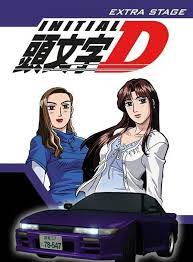
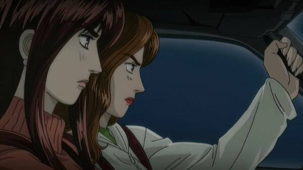

Ordem Cronológica
Extra Stage
Se aproveitando da popularidade da dupla feminina Impact Blue que apareceu no Primeiro Estágio, esse OVA fala sobre a dinâmica da dupla Mako e Sayuki.
Logo no começo, Mako está enfrentando seu coração partido depois de terminar com Iketani, quando Shingo e Nakazato (membros do Myogi Night Kids) aparecem para avisar a dupla sobre os Emperor, que venceram os Night Kids em seu curso local e que pretendem fazer o mesmo com todas as equipes de Gunma. Como Shingo é amigo de infância de Sayuki, ele achou que deveria avisá-las. As habilidades de Mako estão afetadas pelas suas preocupações e ela se pergunta se conseguiria enfrentar um desafio dos Emperor. Mas, quando dois pilotos do Emperor aparecem em Usui e zombam com o Impact Blue por serem mulheres, Mako e Sayuki os desafiam para uma corrida. Em uma disputa de descida contra o LanEvo dos Emperor, Mako consegue superar sua depressão e melhorar suas habilidades, vencendo facilmente a corrida.
Embora Mako decida que não precisa de um homem em sua vida, ela gradativamente desenvolve um relacionamento com um amigo de Shingo chamado Ren, depois que Shingo e Sayuki os forçam a sair juntos. Ren é um piloto de rua, mas pretende parar de correr porque ele acredita que alcançou o máximo que poderia chegar e, por não ter como melhorar, ele perdeu o interesse. Mako se sente diferente, sabendo que há muitos pilotos melhores do que ela e ela quer chegar ao nível deles. Ren revela que deseja que Mako pare de correr, temendo por sua segurança, porque se ela for ser sua namorada ele ficaria preocupado toda vez que ela fosse correr.
Entretanto, depois que Mako o leva para correr em Usui, ele entende porque ela não vai deixar de ser uma piloto de rua.

